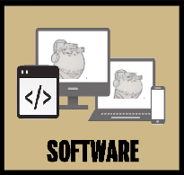

Computer Information Technology: Your Future Starts Here
Purdue University of Indianapolis CIT Concentrations
*Core Course
**Offered One Semester
2nd Semester (SPRING)
3rd Semester (FALL)
4th Semester (SPRING)
5th Semester (FALL)
6th Semester (SPRING)
7th Semester (FALL)
8th Semester (SPRING)
3rd Semester (FALL)
4th Semester (SPRING)
5th Semester (FALL)
6th Semester (SPRING)
7th Semester (FALL)
8th Semester (SPRING)
- Network Technician
- Network Administrator
- Net Support Specialist
- Field Service Engineer
- Network Architect
- Wireless Engineer
- Cloud Computing Engineer
Careers In Networking
- Data engineer
- IT project manager
- Database administrator
- Computer systems analyst
- Data analyst
- Database Architect
- IT support analyst
Careers In Database Management

- Web Programmer
- UX/UI Designer
- Game Developer
- Full Stack Developer
- Mobile and Software App Developer
- Web Architect
- Dev Ops Engineer
Careers In Web/Application Development
- Chief Info Officer
- Security Analyst
- Security Test Technician
- IT Security Engineer
- IT Security Consultant
- IT Security Operator
- Incident Response Consultant
Careers In Cybersecurity